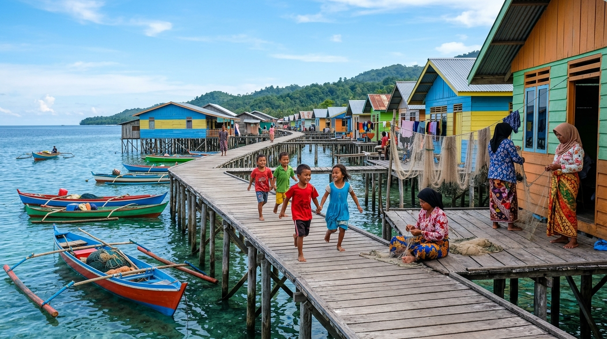

Selamat Datang di
Desa Mantigola Makmur
Website Informasi Desa Mantigola Makmur, Kecamatan Kaledupa, Kabupaten Wakatobi
Menampilkan informasi, potensi, budaya, dan kehidupan masyarakat Desa Mantigola Makmur.
Luas Wilayah
Dusun
Mantigola Makmur & Sejati
Penduduk
Data 2023
Kecamatan
Kab. Wakatobi
Tentang Desa Mantigola Makmur

Mantigola, Kaledupa, Wakatobi
Kec. Kaledupa, Kab. Wakatobi
±14,28 hektare
Masyarakat Pesisir/Bajo
Kepulauan Wakatobi
Desa Mantigola Makmur merupakan salah satu desa di Kecamatan Kaledupa, Kabupaten Wakatobi, Provinsi Sulawesi Tenggara. Desa ini memiliki karakter masyarakat pesisir yang sangat erat dengan kehidupan laut.
Kehidupan masyarakat, budaya, mata pencaharian, dan lingkungan desa memiliki hubungan yang kuat dengan wilayah perairan Wakatobi — salah satu kawasan laut yang kaya keanekaragaman hayati di dunia.
Masyarakat Mantigola mayoritas merupakan bagian dari komunitas Bajo, kelompok pelaut yang dikenal dengan kearifan lokal bahari dan keahlian mereka dalam mengenal laut. Pemukiman desa memiliki karakter yang unik karena dibangun di atas perairan dengan rumah-rumah di atas tiang di atas laut dan karang.
Dusun di Desa Mantigola Makmur
Dusun Mantigola Makmur
Dusun Mantigola Sejati
Sejarah dan Perjalanan Mantigola
Catatan sejarah di bawah ini disusun berdasarkan sumber-sumber publik yang tersedia. Data administratif resmi desa akan diperbarui secara berkala.
Akar Komunitas Bajo
Kawasan Mantigola dikenal sebagai salah satu komunitas Bajo yang telah lama mendiami perairan Kaledupa. Masyarakat Bajo dikenal sebagai pelaut dan penyelam ulung yang memiliki hubungan mendalam dengan laut.
Konteks Budaya · Sumber: Penelitian AkademikPembentukan Administratif
Desa Mantigola Makmur secara administratif merupakan bagian dari sistem pemerintahan Kecamatan Kaledupa, Kabupaten Wakatobi, dengan kode wilayah 74.07.02.2018.
Data AdministratifDua Dusun
Desa ini terdiri dari dua dusun, yaitu Dusun Mantigola Makmur dan Dusun Mantigola Sejati, yang keduanya mencerminkan kehidupan masyarakat pesisir Wakatobi.
Data Administrasi DesaCatatan Penelitian
Berbagai penelitian dari universitas dan lembaga akademik Indonesia mencatat Mantigola sebagai salah satu komunitas Bajo yang paling original dan penting secara budaya di kawasan Wakatobi.
Sumber: UGM dan lembaga riset lainnyaKelengkapan Data Sejarah
Informasi sejarah administratif desa sedang dilengkapi berdasarkan arsip dan dokumentasi Pemerintah Desa.
Placeholder · Data dalam proses verifikasiPemerintahan Desa Mantigola Makmur
Kepala Desa
Pemimpin tertinggi pemerintahan desa
Data sedang diperbarui oleh Pemerintah Desa.
Sekretaris Desa
Membantu administrasi pemerintahan desa
Data sedang diperbarui oleh Pemerintah Desa.
Kepala Urusan
Mengelola urusan keuangan, umum, & perencanaan
Data sedang diperbarui oleh Pemerintah Desa.
Kepala Seksi
Pelayanan, kemasyarakatan, & pemerintahan
Data sedang diperbarui oleh Pemerintah Desa.
Kepala Dusun
2 Kepala Dusun: Mantigola Makmur & Mantigola Sejati
Data sedang diperbarui oleh Pemerintah Desa.
BPD (Badan Permusyawaratan Desa)
Lembaga legislatif desa
Data sedang diperbarui oleh Pemerintah Desa.
Lembaga Kemasyarakatan Desa
PKK, Karang Taruna, Posyandu, dll.
Data sedang diperbarui oleh Pemerintah Desa.
Data Perangkat Desa
Data nama perangkat desa sedang diperbarui. Untuk informasi resmi mengenai perangkat desa yang menjabat saat ini, silakan konfirmasi langsung kepada Kantor Desa Mantigola Makmur.
Visi & Misi Desa Mantigola Makmur
Visi dan Misi Desa Mantigola Makmur akan ditampilkan setelah tersedia dari dokumen resmi Pemerintah Desa.
Potensi Desa Mantigola Makmur
Kekayaan alam, budaya, dan potensi yang dimiliki desa sebagai modal pembangunan masyarakat.
Potensi Bahari
Kehidupan masyarakat sangat erat dengan laut dan aktivitas pesisir. Perairan Wakatobi dikenal sebagai salah satu kawasan laut dengan keanekaragaman hayati tertinggi di dunia.
Perikanan
Masyarakat Mantigola memiliki tradisi panjang sebagai nelayan. Aktivitas perikanan tradisional menjadi salah satu sumber penghidupan utama masyarakat desa.
Budaya Bajo
Komunitas Bajo di Mantigola memiliki kekayaan budaya yang unik, termasuk tradisi maritim, pengetahuan lokal tentang laut, kuliner khas, dan seni budaya yang kaya.
Wisata Bahari
Keindahan perairan Wakatobi dan keunikan pemukiman pesisir Mantigola menawarkan potensi wisata bahari yang luar biasa bagi pengunjung nusantara maupun mancanegara.
UMKM & Ekonomi
Data UMKM dan kegiatan ekonomi masyarakat sedang diperbarui oleh Pemerintah Desa.
Lingkungan Pesisir
Masyarakat Mantigola hidup berdampingan dengan ekosistem laut. Pelestarian lingkungan pesisir, terumbu karang, dan ekosistem mangrove merupakan bagian penting dari kehidupan desa.
Budaya dan Kehidupan Masyarakat
Masyarakat Mantigola hidup dalam harmoni yang kuat dengan laut — sebuah warisan budaya yang terus dijaga dan dilestarikan.
Pelaut & Nelayan Ulung
Masyarakat Bajo Mantigola dikenal sebagai pelaut dan penyelam yang sangat terampil, mewariskan pengetahuan maritim secara turun-temurun.
Tradisi Melaut
Aktivitas melaut bukan hanya sumber penghidupan, tetapi juga bagian dari identitas budaya dan kehidupan sosial masyarakat.
Kuliner Khas
Kuliner tradisional seperti onde-onde Mantigola, kerencong, kue cucur, dan roko-roko mencerminkan kekayaan budaya lokal.
Rumah di Atas Laut
Pemukiman yang dibangun di atas tiang di perairan merupakan ciri khas arsitektur tradisional komunitas Bajo.
Kehidupan Komunal
Kebersamaan dan gotong royong menjadi nilai utama dalam kehidupan sosial masyarakat desa yang erat satu sama lain.
Pengetahuan Lokal Laut
Pemahaman mendalam tentang ekosistem laut, arus, dan cuaca merupakan warisan pengetahuan lokal yang sangat berharga.
Tentang Komunitas Bajo di Mantigola
Komunitas Bajo yang mendiami kawasan Mantigola, Kaledupa, merupakan bagian dari komunitas maritim yang telah mendiami perairan Wakatobi sejak lama. Mereka diakui oleh para peneliti sebagai salah satu komunitas Bajo yang paling otentik dan penting secara budaya di wilayah tersebut. Catatan dari berbagai penelitian akademik, termasuk dari Universitas Gadjah Mada, mengakui pentingnya komunitas ini dalam studi budaya maritim Indonesia.
Sumber: Berbagai penelitian akademik publik · Bukan klaim administratif resmi desa
Selaras dengan Laut
Bagi masyarakat Mantigola, laut bukan sekadar hamparan air — ia adalah rumah, sumber kehidupan, dan identitas. Sejak generasi pertama yang membangun rumah di atas perairan, hubungan antara manusia dan laut menjadi bagian tak terpisahkan dari kehidupan sehari-hari.
Perahu menjadi alat transportasi utama, aktivitas melaut menjadi rutinitas harian, dan pengetahuan tentang arus, musim, dan ekosistem laut diwariskan secara turun-temurun.
Perahu Tradisional
Sarana utama transportasi & melaut
Kehidupan Laut
Sumber penghidupan & identitas budaya
Perikanan Tradisional
Mata pencaharian utama masyarakat
Budaya Maritim
Warisan leluhur yang dijaga turun-temurun
Komunitas Pesisir
Masyarakat yang solid & gotong royong
Galeri Desa Mantigola Makmur
⚠️ Foto galeri saat ini adalah ilustrasi AI bertema pesisir Wakatobi. Foto dokumentasi asli desa akan ditambahkan setelah tersedia dari Pemerintah Desa.
Data & Infografis Desa
Sumber data publik, ~2023
⚠️ Angka dapat bervariasi antar sumber. Konfirmasi data terkini kepada Pemerintah Desa.
APBDes
Dokumen publik sedang dalam proses pembaruan.
RPJMDes
Dokumen publik sedang dalam proses pembaruan.
RKPDes
Dokumen publik sedang dalam proses pembaruan.
Peraturan Desa
Dokumen publik sedang dalam proses pembaruan.
Laporan Desa
Dokumen publik sedang dalam proses pembaruan.
Dokumen Publik
Dokumen publik sedang dalam proses pembaruan.
Layanan Informasi Desa
Untuk semua layanan, silakan datang langsung ke Kantor Desa Mantigola Makmur atau hubungi pemerintah desa.
Surat Keterangan
Pengurusan surat keterangan domisili, keterangan usaha, dan dokumen lainnya.
Datang langsung ke Kantor Desa Mantigola Makmur
Informasi Administrasi
Informasi mengenai prosedur dan persyaratan administrasi desa.
Datang langsung ke Kantor Desa Mantigola Makmur
Informasi Kependudukan
Informasi umum kependudukan desa (non-data pribadi).
Datang langsung ke Kantor Desa Mantigola Makmur
Informasi Pemerintahan
Informasi mengenai struktur dan program pemerintahan desa.
Datang langsung ke Kantor Desa Mantigola Makmur
Informasi Kegiatan Desa
Jadwal dan informasi kegiatan yang diselenggarakan oleh desa.
Datang langsung ke Kantor Desa Mantigola Makmur
Informasi Pembangunan
Informasi mengenai program dan progress pembangunan desa.
Datang langsung ke Kantor Desa Mantigola Makmur
Lokasi Desa Mantigola Makmur
Peta: © OpenStreetMap contributors · Lokasi berdasarkan data publik dan perlu verifikasi Pemerintah Desa.
Alamat Resmi
Desa Mantigola MakmurKecamatan Kaledupa
Kabupaten Wakatobi
Sulawesi Tenggara, Indonesia
Hubungi Pemerintah Desa
Untuk informasi lebih lanjut, silakan datang langsung atau hubungi Kantor Desa.
Informasi Kontak
Alamat
Desa Mantigola Makmur, Kecamatan Kaledupa, Kabupaten Wakatobi, Sulawesi Tenggara
Telepon
Belum tersedia
Belum tersedia
Jam Pelayanan
Silakan konfirmasi kepada Pemerintah Desa
Kantor Desa Mantigola Makmur
Untuk layanan administrasi, informasi desa, dan keperluan lainnya, silakan datang langsung ke Kantor Pemerintah Desa Mantigola Makmur, Kecamatan Kaledupa, Kabupaten Wakatobi.
Catatan Penting
Data kontak resmi (telepon/email) belum tersedia secara publik. Informasi akan diperbarui setelah dikonfirmasi oleh Pemerintah Desa.